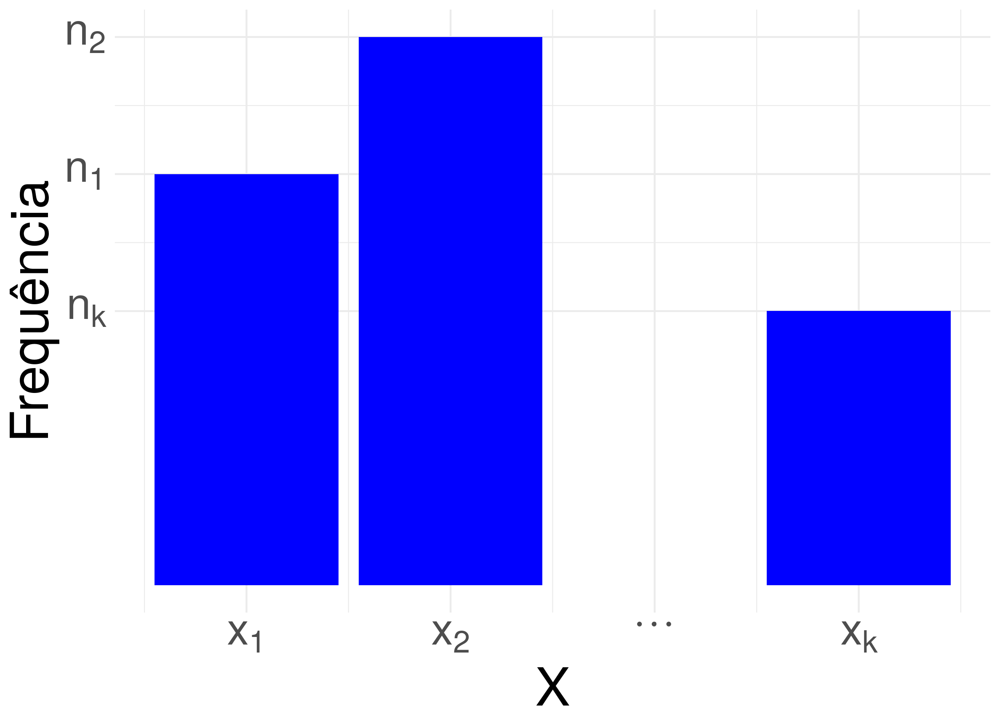
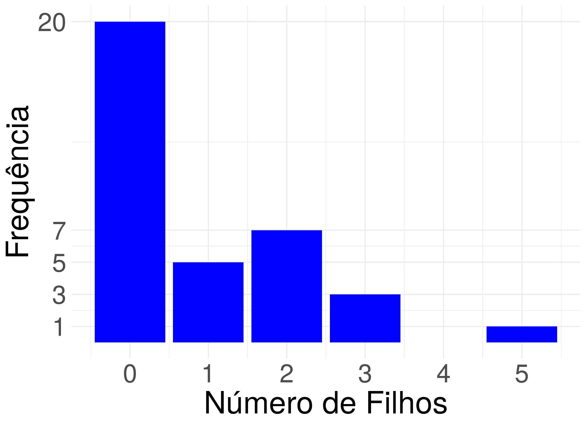
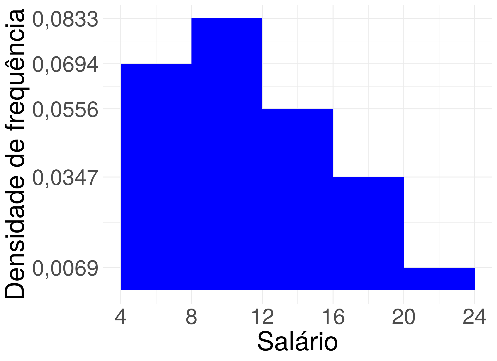

E como calcular medidas de resumo quando temos um gráfico de barras ou histograma?
Com um gráfico de barras e um histograma, você tem uma ideia da distribuição dos dados. Mas e se você deseja encontrar um ou alguns números que representam ou resumem fidedignamente os valores representados nestes gráficos? Para encontrar estes números podemos usar medidas de resumo, e se você tem o conjunto de dados que foi usado para construir estes gráficos essa tarefa é simples em softwares como o R, Python ou até um software de planilha como o excel. E se você tem apenas o gráfico de barras ou histograma e não tem o conjunto de dados? Don’t panic, mesmo nesse caso conseguimos calcular medidas de resumo, e é isso que eu vou explicar como fazer neste post.
Gráfico de barras
Imagine que você tem um gráfico de barras para uma variável quantitativa discreta \(X\) com valores observados \(x_1, \dots, x_k\), conforme a figura abaixo.

Cada valor observado \(x_i, i=1, \dots, k\) do gráfico acima tem uma barra com altura \(n_i,i=1, \dots, k\)1. Logo, usando esta altura, que é igual a frequência, podemos construir a tabela de distribuição de frequência abaixo.
| \(X\) | Frequência | Frequência relativa (proporção) | Porcentagem |
|---|---|---|---|
| \(x_1\) | \(n_1\) | \(f_1 = \frac{n_1}{n}\) | \(100\cdot f_1\\%\) |
| \(x_2\) | \(n_1\) | \(f_2 = \frac{n_2}{n}\) | \(100\cdot f_2\\%\) |
| \(x_3\) | \(n_3\) | \(f_3 = \frac{n_3}{n}\) | \(100\cdot f_3\\%\) |
| \(\vdots\) | \(\vdots\) | \(\vdots\) | \(\vdots%\) |
| \(x_k\) | \(n_k\) | \(f_k = \frac{n_k}{n}\) | \(100\cdot f_k\%\) |
| Total | \(n = n_1+\cdots+n_k\) | \(1 \approx f_1 + \cdots + f_k\) | \(100\% \approx 100\cdot f_1 + \cdots + 100 \cdot f_k\) |
Para calcular as medidas de resumo, note que o valor \(x_i\) aparece \(n_i\) vezes para \(i=1, \dots, k\). Aqui vamos calcular a média, desvio padrão e a mediana. Para calcular a média, somamos todos os valores e dividimos pelo tamanho da amostra, e para calcular o desvio padrão somamos todos os desvios ao quadrado2 e dividimos pelo tamanho da amostra subtraído por um e em seguida tiramos a raiz quadrada deste valor. Então podemos usar a frequência da tabela de distribuição de frequência como descrito na equação abaixo para calcular a média e o desvio padrão. \[ \begin{split} \bar{x} &= \frac{\overbrace{x_1+ \cdots + x_1}^{n_1\mbox{ vezes}} + \cdots + \overbrace{x_k+ \cdots + x_k}^{n_k\mbox{ vezes}}}{n}\newline &= \frac{n_1 \cdot x_1 + \cdots + n_k \cdot x_k}{n}\newline dp(x) &= \sqrt{Var(x)}\newline &= \sqrt{\frac{\overbrace{(x_1 - \bar{x})^2+ \cdots + (x_1 - \bar{x})^2}^{n_1\mbox{ vezes}} + \cdots + \overbrace{(x_k - \bar{x})^2+ \cdots + (x_k - \bar{x})^2}^{n_k\mbox{ vezes}}}{n-1}}\newline &= \sqrt{\frac{n_1\cdot(x_1 - \bar{x})^2 + \cdots + n_k \cdot (x_k - \bar{x})^2}{n-1}} \end{split} \]
Para calcular a mediana, precisamos calcular as estatísticas de ordem \(x_{(i)}\), em que \(x_{(i)}\) é o \(i\)-ésimo menor número. Imagine que \(x_1\) é o menor número da amostra, então os \(n_1\) menores valores são todos iguais a \(x_1\): \(x_{(1)} = x_{(2)} = \cdots = x_{(n_1)} = x_1\). Suponha que \(x_2\) é o segundo menor valor da amostra, então os \(n_2\) menores valores (depois de \(x_1\)) são todos iguais a \(x_2\): \(x_{(n_1+1)} = x_{(n_1+2)} = \cdots = x_{(n_1+n_2)} = x_2\). Imagine agora que \(x_3\) é o terceiro menor valor da amostra, então os menores valores (depois de \(x_1\) e \(x_2\)) são todos iguais a \(x_3\): \(x_{(n_1+n_2+1)} = x_{(n_1+n_2+2)} = \cdots = x_{(n_1+n_2+n_3)} = x_3\). E continuamos neste processo até organizar todos os valores observados da amostra do menor até o maior valor como indicado na tabela abaixo. Note que estamos usando a frequência \(n_1\), \(n_2\) até \(n_k\) da tabela distribuição de frequências.
| Estatística de ordem |
|---|
| \(x_{(1)} = x_{(2)} = \cdots = x_{(n_1)} = x_1\) |
| \(x_{(n_1+1)} = x_{(n_1+2)} = \cdots = x_{(n_1+n_2)} = x_2\) |
| \(x_{(n_1+n_2+1)} = x_{(n_1+n_2+2)} = \cdots = x_{(n_1+n_2 + n_3)} = x_3\) |
| \(\\vdots\) |
| \(x_{(n_1+n_2 + n_3+ \cdots + n_{k-1}+1)} = x_{(n_1+n_2 + n_3+ \cdots + n_{k-1}+2)} = \cdots = x_{(n_1+n_2 + n_3+ \cdots + n_{k-1}+ n_k)} = x_k\) |
Então a mediana é calculada do jeito tradicional usando a equação abaixo. \[ md(x) = \frac{x_{\left(\lceil(n+1)\cdot 0.5\rceil \right)} + x_{\left(\lfloor(n+1)\cdot 0.5\rfloor \right)}}{2} \]
em que \(\lfloor \cdot \rfloor\) é a função arredonda para baixo e \(\lceil \cdot \rceil\) é a função arredonda para cima. Por exemplo, \(\lfloor 1,2 \rfloor = 1\), \(\lfloor 1,76 \rfloor = 1\), \(\lceil 1,2 \rceil = 2\) e \(\lceil 1,76 \rceil =2\).
Exemplo
Considere o gráfico de barras da variável Número de filhos de um conjunto de \(36\) funcionário da Companhia MB representado na figura abaixo.

Note que a barra que corresponde a zero filhos tem altura \(20\) e frequência \(20\), a barra que corresponde a um filho tem altura \(5\) e frequência \(5\), a barra que corresponde a dois filhos tem altura \(7\) e frequência \(7\), a barra que corresponde a três filhos tem altura \(3\) e frequência \(3\), a barra que corresponde a quatro filhos tem altura \(0\) e frequência \(0\) e a barra que corresponde a cinco filhos tem altura \(1\) e frequência \(1\). Consequentemente, temos a seguinte tabela de distribuição de frequências.
| Número de filhos | Frequência | Frequência relativa (proporção) | Porcentagem |
|---|---|---|---|
| \(0\) | \(20\) | \(\frac{20}{36} = 0,5556\) | \(0,5556 \cdot 100 = 55,56\\%\) |
| \(1\) | \(5\) | \(\frac{5}{36} = 0,1389\) | \(0,1389 \cdot 100 = 13,89\\%\) |
| \(2\) | \(7\) | \(\frac{7}{36}=0,1944\) | \(0,1944 \cdot 100 = 19,44\\%\) |
| \(3\) | \(3\) | \(\frac{3}{36}=0,0833\) | \(0,0833 \cdot 100 = 8,33\\%\) |
| \(4\) | \(0\) | \(\frac{0}{36} =0\) | \(0 \cdot 100 = 0\\%\) |
| \(5\) | \(1\) | \(\frac{1}{36} = 0,0278\) | \(0,0278 \cdot 100 = 2,78\\%\) |
| Total | \(36\) | \(1\) | \(100\) |
\[ \begin{split} \bar{x} &= \frac{20 \cdot 0 + 5 \cdot 1 + 7 \cdot 2 + 3 \cdot 3 + 0 \cdot 4 + 1 \cdot 5}{36} = 0,92.\newline dp(x) &= \sqrt{\frac{20 \cdot (0 - 0,92)^2 + 5 \cdot (1 - 0,92)^2 + 7 \cdot (2 - 0,92)^2 + 3 \cdot (3 - 0,92)^2 + 0 \cdot (4 - 0,92)^2 + 1 \cdot (5 - 0,92)^2}{35}}\newline &= 1,25. \end{split} \]
Para calcular a mediana, primeiro precisamos encontrar as estatísticas de ordem.
| Estatísticas de ordem |
|---|
| \(x_{(1)}=x_{(2)}=\\cdots=x_{(20)}=0\) |
| \(x_{(21)}=x_{(22)}=x_{(23)}=x_{(24)}=x_{(25)}=1\) |
| \(x_{(26)}=x_{(27)}=x_{(28)}=x_{(29)}=x_{(30)}=x_{(31)}=x_{(32)}=2\) |
| \(x_{(33)}=x_{(34)}=x_{(35)}=3\) |
| \(x_{(36)} = 5\) |
Então a mediana é dada por
\[ \begin{split} md(x) &= \frac{x_{\left(\lfloor \frac{n+1}{2} \rfloor\right)} + x_{\left(\lceil \frac{n+1}{2} \rceil\right)}}{2}\newline &= \frac{x_{\left(\lfloor \frac{36+1}{2} \rfloor\right)} + x_{\left(\lceil \frac{36+1}{2} \rceil\right)}}{2}\newline &= \frac{x_{\left(\lfloor 18,5 \rfloor\right)} + x_{\left(\lceil 18,5 \rceil\right)}}{2}\newline &= \frac{x_{\left(18\right)} + x_{\left(19\right)}}{2}=0\newline \end{split} \]
Histograma
O histograma é um gráfico construído usando barras sem espaçamento entre elas, e cada barra tem a largura da base igual a largura do intervalo intervalo usado na contagem da variável quantitativa contínua e a área da barra é igual a frequência relativa3. Note que a área da figura geométrica do histograma sempre é um, e a altura de cada barra é a divisão da frequência relativa pela largura do intervalo conforme ilustrado na figura abaixo. Chamamos essa divisão de Densidade de frequência.

Para encontrarmos a frequência relativa de cada intervalo, e consequentemente a porcentagem, precisamos multiplicar a densidade de frequência (altura da barra) pela largura do intervalo, conforme tabela abaixo.
| X | Densidade de frequência (altura da barra) | Frequência relativa | Porcentagem |
|---|---|---|---|
| \([a_0, a_1)\) | \(df_1\) | f_1 = \(df_1 \cdot (a_1 - a_0)\) | \(f_1 \cdot 100\%\) |
| \([a_1, a_2)\) | \(df_2\) | f_2 = \(df_2 \cdot (a_2 - a_1)\) | \(f_2 \cdot 100\%\) |
| \([a_3, a_2)\) | \(df_3\) | f_3 = \(df_3 \cdot (a_3 - a_2)\) | \(f_3 \cdot 100\%\) |
| \(\vdots\) | \(\vdots\) | \(\vdots\) | \(\vdots\) |
| \([a_k, a_{k-1})\) | \(df_k\) | f_k = \(df_k \cdot (a_k - a_{k-1})\) | \(f_k \cdot 100\%\) |
| Total | \(--\) | \(1\) | \(100\%\) |
Se soubermos o tamanho da amostra, conseguimos calcular a frequência (absoluta): basta multiplicar a frequência relativa pelo tamanho da amostra. Imagine que o tamanho da amostra é \(n\), então a tabela de distribuição de frequências é dada pela tabela abaixo.
| X | Densidade de frequência (altura da barra) | Frequência relativa | Porcentagem | Frequência | |
|---|---|---|---|---|---|
| \([a_0, a_1)\) | \(df_1\) | f_1 = \(df_1 \cdot (a_1 - a_0)\) | \(f_1 \cdot 100\%\) | \(f_1 \cdot n\) | |
| \([a_1, a_2)\) | \(df_2\) | f_2 = \(df_2 \cdot (a_2 - a_1)\) | \(f_2 \cdot 100\%\) | \(f_2 \cdot n\) | |
| \([a_3, a_2)\) | \(df_3\) | f_3 = \(df_3 \cdot (a_3 - a_2)\) | \(f_3 \cdot 100\%\) | \(f_3 \cdot n\) | |
| \(\vdots\) | \(\vdots\) | \(\vdots\) | \(\vdots\) | \(\vdots\) | |
| \([a_k, a_{k-1})\) | \(df_k\) | f_k = \(df_k \cdot (a_k - a_{k-1})\) | \(f_k \cdot 100\%\) | \(f_k \cdot n\) | |
| Total | \(--\) | \(1\) | \(100\%\) | \(n\) |
Agora, queremos calcular a média e o desvio padrão. Mas na tabela de distribuição de frequências acima, sabemos apenas que \(n_i\) valores da variável quantitativa contínua \(X\) está entre \(a_{i-1}\) e \(a_i\), para \(i=1, \dots, k\), mas não sabemos quais são esses valores e sem esses valores não conseguimos calcular a média e o desvio padrão. Existe vários algoritmos para contornar essa restrição e você pode consultar, por exemplo, o livro com título Estatística Básica de Bussab e Morettin. Aqui neste post, vamos usar uma abordagem bem simples, rápida e um pouco grosseira: vamos assumir que todos os \(n_i\) valores do intervalo de valores \([a_{i-1}, a_i)\) são aproximadamente iguais a \(\frac{a_{i-1} + a_i}{2}\). Vou chamar esse valor \(\frac{a_{i-1} + a_i}{2}\) de ponto médio. E temos a seguinte tabela de distribuição de frequências.
| X | Densidade de frequência (altura da barra) | Frequência relativa | Porcentagem | Frequência | Ponto médio | |
|---|---|---|---|---|---|---|
| \([a_0, a_1)\) | \(df_1\) | f_1 = \(df_1 \cdot (a_1 - a_0)\) | \(f_1 \cdot 100\%\) | \(f_1 \cdot n\) | \(p_1 = \frac{a_0 + a_1}{2}\) | |
| \([a_1, a_2)\) | \(df_2\) | f_2 = \(df_2 \cdot (a_2 - a_1)\) | \(f_2 \cdot 100\%\) | \(f_2 \cdot n\) | \(p_2 = \frac{a_2 + a_1}{2}\) | |
| \([a_3, a_2)\) | \(df_3\) | f_3 = \(df_3 \cdot (a_3 - a_2)\) | \(f_3 \cdot 100\%\) | \(f_3 \cdot n\) | \(p_3 = \frac{a_3 + a_2}{2}\) | |
| \(\vdots\) | \(\vdots\) | \(\vdots\) | \(\vdots\) | \(\vdots\) | ||
| \([a_k, a_{k-1})\) | \(df_k\) | f_k = \(df_k \cdot (a_k - a_{k-1})\) | \(f_k \cdot 100\%\) | \(f_k \cdot n\) | \(p_k = \frac{a_k + a_{k-1}}{2}\) | |
| Total | \(--\) | \(1\) | \(100\%\) | \(n\) | \(--\) |
Com a tabela de distribuição de frequências, podemos usar o ponto médio para calcular a média e o desvio padrão de forma análoga ao caso da variável quantitativa discreta. Mais precisamente,
\[ \begin{split} \bar{x} &= \frac{p_1 \cdot n_1 + p_2 \cdot n_2 + \cdots + p_k \cdot n_k}{n}\newline dp(x) &= \sqrt{Var(x)}\newline &= \sqrt{\frac{n_1(\bar{x} - p_1) + n_2(\bar{x} - p_2) + \cdots + n_k(\bar{x} - p_k)}{n-1}}\newline \end{split} \]
Para calcular a mediana, precisamos calcular as estatísticas de ordem \(p_{(i)}\), em que \(p_{(i)}\) é o \(i\)-ésimo menor número. Imagine que \(p_1\) é o menor número entre os pontos médios, então os \(n_1\) menores pontos médios são todos iguais a \(p_1\): \(p_{(1)} = p_{(2)} = \cdots = p_{(n_1)} = p_1\). Suponha que \(p_2\) é o segundo menor valor da amostra, então os \(n_2\) menores valores (depois de \(p_1\)) são todos iguais a \(p_2\): \(p_{(n_1+1)} = p_{(n_1+2)} = \cdots = p_{(n_1+n_2)} = p_2\). Imagine agora que \(p_3\) é o terceiro menor valor da amostra, então os menores valores (depois de \(p_1\) e \(p_2\)) são todos iguais a \(p_3\): \(p_{(n_1+n_2+1)} = p_{(n_1+n_2+2)} = \cdots = p_{(n_1+n_2+n_3)} = p_3\). E continuamos neste processo até organizar todos os valores observados da amostra do menor até o maior valor como indicado na tabela abaixo. Note que estamos usando a frequência \(n_1\), \(n_2\) até \(n_k\) da tabela distribuição de frequências.
| Estatística de ordem |
|---|
| \(p_{(1)} = p_{(2)} = \cdots = p_{(n_1)} = p_1\) |
| \(p_{(n_1+1)} = p_{(n_1+2)} = \cdots = p_{(n_1+n_2)} = p_2\) |
| \(p_{(n_1+n_2+1)} = p_{(n_1+n_2+2)} = \cdots = p_{(n_1+n_2 + n_3)} = p_3\) |
| \(\\vdots\) |
| \(p_{(n_1+n_2 + n_3+ \cdots + n_{k-1}+1)} = p_{(n_1+n_2 + n_3+ \cdots + n_{k-1}+2)} = \cdots = p_{(n_1+n_2 + n_3+ \cdots + n_{k-1}+ n_k)} = p_k\) |
Então a mediana é calculada do jeito tradicional usando a equação abaixo. \[ md(x) = \frac{p_{\left(\lceil(n+1)\cdot 0.5\rceil \right)} + p_{\left(\lfloor(n+1)\cdot 0.5\rfloor \right)}}{2}. \]
Exemplo
Considere o histograma da variável quantitativa contínua \(X\) de 36 funcionário da companhia MB da figura abaixo.

Então, temos a seguinte tabela de distribuição de frequências.
| Salário | Densidade de frequência | Frequência relativa | Porcentagem | frequência | Ponto médio |
|---|---|---|---|---|---|
| \([4, 8)\) | \(0,0694\) | \(0,0694 \cdot 4 = 0,2776\) | \(27,76\\%\) | $0,2776 \cdot 36 \approx 10 \(|\) = 6\(| |\)[8, 12)$ | \(0,0833\) |
| \([12, 16)\) | \(0,0556\) | \(0,0556 \cdot 4 = 0,2224\) | \(22,24\\%\) | \(0,2224 \\cdot 36 \\approx 8\) | \(\frac{12 + 16}{2} = 14\) |
| \([16, 20)\) | \(0,0347\) | \(0,0347 \cdot 4 = 0,1388\) | \(13,88\\%\) | \(0,1388 \\cdot 36 \\approx 5\) | \(\frac{16 + 20}{2} = 18\) |
| \([20, 24)\) | \(0,0069\) | \(0,0069 \cdot 4 = 0,0276\) | \(2,76\\%\) | \(0,0276 \\cdot 36 \\approx 1\) | \(\frac{20 + 24}{2} = 22\) |
| Total | \(--\) | \(1\) | \(100\\%\) | \(--\) |
A média e o desvio padrão são dados por
\[ \begin{split} \bar{x} &= \frac{10 \cdot 6 + 12 \cdot 10 + 8 \cdot 14 + 5 \cdot 18 + 1 \cdot 1}{36}\newline &= 11,22\newline dp(x) &= \sqrt{\frac{10 \cdot (6 - 11,22)^2 + 12 \cdot (10 - 11,22)^2 + 8 \cdot (14 - 11,22)^2 + 5 \cdot (18 - 11,22)^2 + 1 \cdot (22 - 11,22)^2}{35}}\newline &= 4,47. \end{split} \]
Usando a tabela de distribuição de frequências acima, podemos encontrar as estatísticas de ordem.
| Estatísticas de ordem |
|---|
| \(p_{(1)}=\\cdots=p_{(10)}=6\) |
| \(p_{(11)}=\\cdots=p_{(22)}=10\) |
| \(p_{(23)}=\\cdots=p_{(30)}=14\) |
| \(p_{(31)}=p_{(32)}=p_{(33)}=p_{(34)}=p_{(35)}=18\) |
| \(p_{(36)}=22\) |
Então a mediana é dada por
\[ \begin{split} md(x) &= \frac{x_{\left(\lfloor \frac{n+1}{2} \rfloor\right)} + x_{\left(\lceil \frac{n+1}{2} \rceil\right)}}{2}\newline &= \frac{x_{\left(\lfloor \frac{36+1}{2} \rfloor\right)} + x_{\left(\lceil \frac{36+1}{2} \rceil\right)}}{2}\newline &= \frac{x_{\left(\lfloor 18,5 \rfloor\right)} + x_{\left(\lceil 18,5 \rceil\right)}}{2}\newline &= \frac{x_{\left(18\right)} + x_{\left(19\right)}}{2}= \frac{10 + 10}{2} = 10. \end{split} \]
© 2023 R para Ciência de Dados
🖤 by Carolina Paraíba e Gilberto Sassi
Notas de rodapé
O gráfico de barras pode ser construído usando frequência relativa (proporção) ou porcentagem. Fique atento ao rótulo do eixo \(y\) do gráfico.↩︎
Os desvios ao quadrado são dados por \((x_i - \bar{x})^2\) em que \(x_i\) é um valor observado da amostra e \(\bar{x}\) é a média.↩︎
O histograma também pode ser construído usando frequência (absoluta) ou porcentagem. Mas geralmente, usamos frequência relativa.↩︎